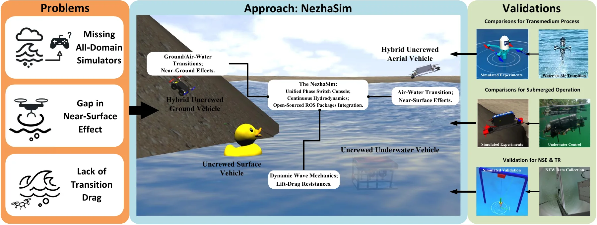
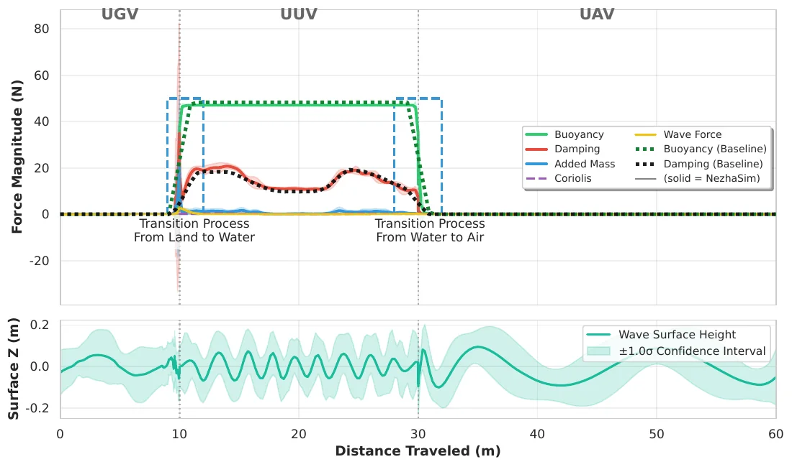
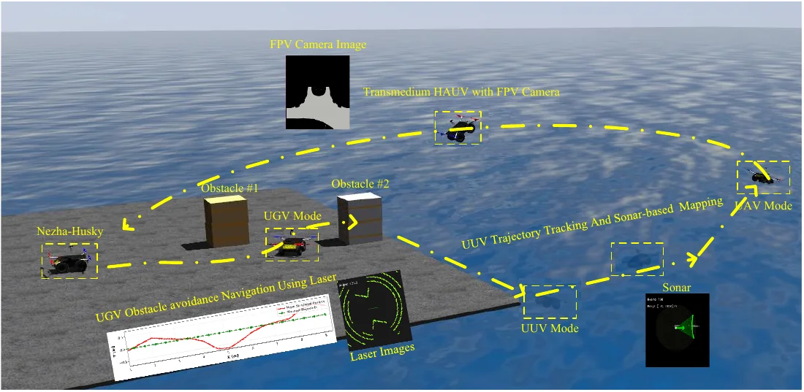
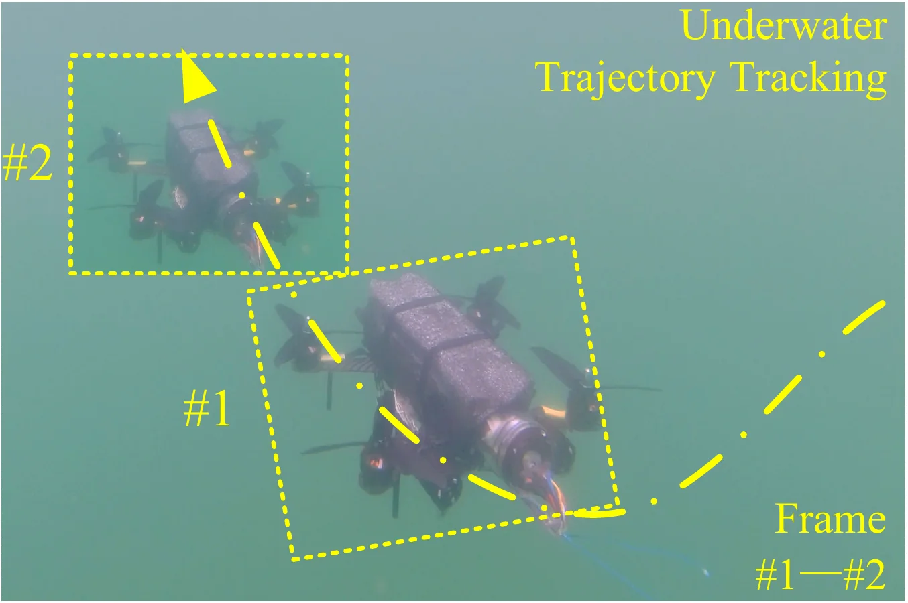
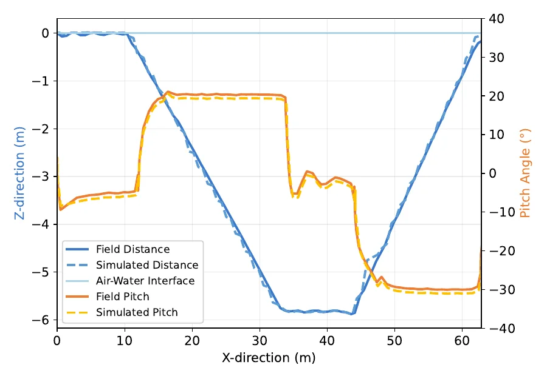
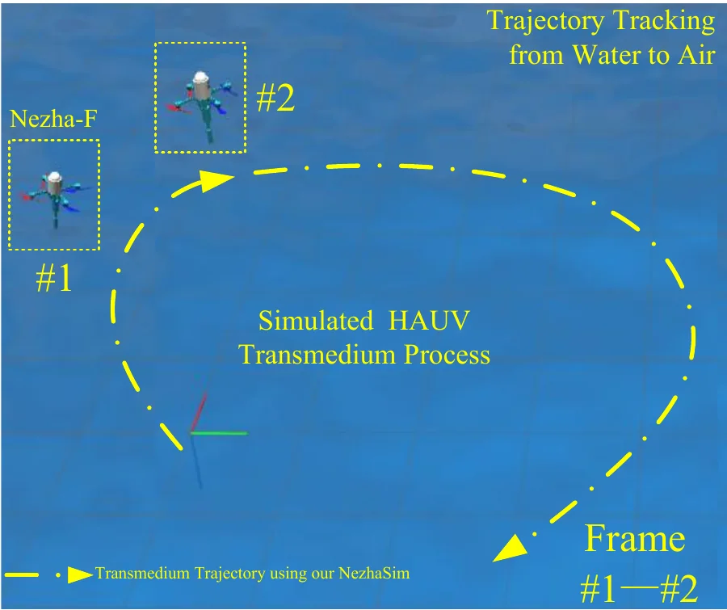
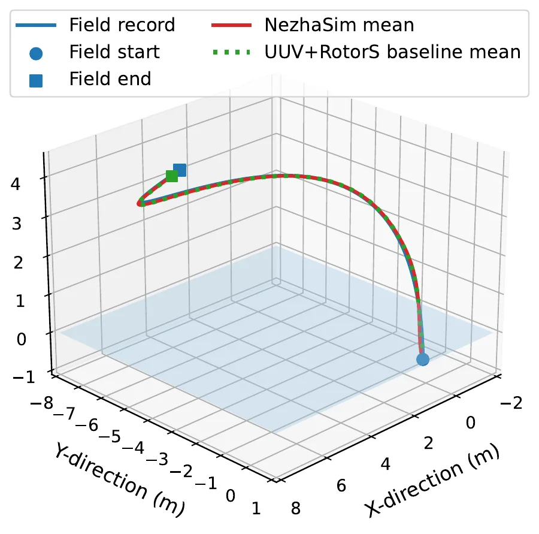

NezhaSim
Bridging Air, Land and Ocean Through ROS
One ROS / Gazebo workspace in which a single robot can drive ashore, dive, break through the surface and fly, while every force acting on it stays observable.
Shanghai Jiao Tong University
IEEE Transactions on Automation Science and Engineering (accepted, 2026)Highlights, 37 s, muted: Scenario A in NezhaSim, then the Nezha-Mini and Nezha-F field records next to their NezhaSim runs (Scenarios B and C). Full video with narration, 3:48
Abstract
Most existing robotics simulators are tailored to a single operating domain, limiting their ability to support transmedium systems that span air, surface, underwater, and ground operation. This paper presents NezhaSim, an open-source, ROS-compatible platform for unified multi-domain simulation. NezhaSim couples two components: a Lightweight Empirical Approximation Pipeline (LEAP) that compresses near-surface-effect and transmedium-resistance data into constant-time empirical models, and a Phase Switch Console (PSC) that blends multi-physics forces continuously across domain boundaries to keep force and data streams continuous during transitions. NezhaSim further exposes decoupled force components through ROS for analysis and debugging. Validation against field data on the Nezha-HAUV (Hybrid Aerial Underwater Vehicle) series shows that NezhaSim reproduces representative task-level behaviors and force trends with sufficient agreement to support controller development and simulator debugging, providing a practical platform that can accelerate transmedium robotics development while reducing reliance on costly field experiments.

Video
A narrated walk-through of the paper, 3 min 48 s with English subtitles: the three components, Scenarios A to C with field footage, and the closed-loop comparison of PSC with rigid switching.
Three components
NezhaSim refactors RotorS, the UUV Simulator, ASV-Wave and the Husky simulator into one engine and adds three parts on top. It is a system-level integration layer for controller development and debugging, not a replacement for CFD.
Blend, don't switch
The surface model and the underwater (Fossen) model both run at every physics step and are blended by the continuous submergence ratio. This keeps the applied wrench continuous across domain boundaries and reduces the force jumps of rigid switching.

Hard fluid effects in constant time
LEAP compresses rig, CFD and field data on the near-surface effect (NSE) and transmedium resistance (TR) into closed-form models: a physical backbone plus a fitted residual. Each query costs the same regardless of the dataset size.

Every force on its own stream
Instead of a black-box net force, NezhaSim publishes buoyancy, damping, added mass, wave and transition drag separately through ROS, so a failure can be traced to one physical effect rather than read from the trajectory.

Validation
Three scenarios and a closed-loop PSC test. Numbers are those of the paper.
Land, water and air in one run
The virtual Nezha-Husky drives past obstacles, enters the lake, tracks an underwater path with sonar mapping, exits the water and hovers. Its hydrodynamic parameters are hypothetical, so this scenario checks framework behavior and module integration.
- 21 runs from the same start pose; every run completed the mission.
- MT shows buoyancy, drag and the impact peaks at the water exit as separate streams.

Nezha-Mini underwater, real to sim
The simulated Nezha-Mini tracks the waypoints of a field record (dive, cruise at depth, climb) with its own controller, 100 times.
- Distance error below 0.5 m for 92% of the path; peak 1.7 m where the vehicle pitches into the dive.
- Pitch error within two degrees for 88% of the path.


Nezha-F water exit, against a baseline
NezhaSim and a UUV Simulator + RotorS baseline without the NSE and TR models fly the same field waypoints from 0.394 m below the surface, 100 times each. All 200 runs completed the transition.
- Mean position error 0.148 m (NezhaSim) and 0.141 m (baseline); mean speed error 0.58 m/s in both.
- NezhaSim breaches 0.18 s after the waypoints, the baseline 0.08 s before; the NSE plugin raises the thrust gain from 0.69 to about 1.15, which the controller absorbs.


Closed loop through waves
Nezha-Mini hovers at 1.5 m, dives into the water and takes off again in waves of 0.1 m amplitude and 4 s period, from the same 30 initial conditions under PSC and under rigid switching (PSC-RS).
| Model | Success | Hover RMS error [m] | Peak |az| at crossing [m/s²] | Peak MT force step [N] |
|---|---|---|---|---|
| PSC | 30/30 | 0.064 | 9.3 | 8.5 |
| PSC-RS | 30/30 | 0.064 | 12.9 | 22.0 |
Medians over the runs. PSC-RS raised the peak MT force step in 30 of 30 pairs by a median factor of 2.9, and the peak vertical acceleration in 29 pairs by 1.3.
Robots and worlds
Transmedium vehicles of the Nezha family, a triple-domain Husky, RexROV and the stock Iris quadrotor, in lakes, open ocean with spectral waves and surveyed sites.
| Model | Domains | Used in |
|---|---|---|
nezha_mini, nezha_mini_cam | air + underwater | Scenario B, PSC closed-loop test, tutorials |
nezha_f, nezha_f_mav | air + underwater | Scenario C (with PX4 / MAVLink variant) |
nezha_husky, nezha_husky1 | ground + air + underwater | Scenario A |
nezha_rocket, rexrov_spotlight, iris | air / underwater | examples |
Get started
Ubuntu 20.04, ROS Noetic, Gazebo 11. The full guide is on the installation page.
git clone --recurse-submodules \ https://github.com/panzerjagerWang/NezhaSim-An-All-Domain-Simulator.git ~/nezha_ws cd ~/nezha_ws rosdep update --include-eol-distros rosdep install --from-paths src --ignore-src -r -y --rosdistro noetic catkin init catkin config --skiplist rotors_hil_interface mavlink_sitl_gazebo catkin build && source devel/setup.bash roslaunch nezha_gazebo nezha_mini_lake.launch paused:=false
Reproduce the paper
Scripts, training data and recorded runs are in the repository.
| Result | Where |
|---|---|
| LEAP fits, Table IV | leap/ |
| Scenario A, Fig. 9 | data/fig9_scenarioA |
| Scenario B, Fig. 10 | data/fig10_scenarioB |
| Scenario C, Fig. 11 | experiments/scenario_c |
| PSC closed loop, Table V; per-step cost | experiments/psc_closed_loop |
Citation
If NezhaSim helps your research, please cite the paper (to appear):
@article{wang2026nezhasim,
title = {NezhaSim: Bridging Air, Land and Ocean Through ROS},
author = {Wang, Jiaqing and Hu, Ruixuan and Bai, Yulin and
Wang, Dongping and Zhou, Hexiong and Zeng, Zheng},
journal = {IEEE Transactions on Automation Science and Engineering},
year = {2026},
note = {To appear}
}
Maintainer: Jiaqing Wang · jiaqing.wang@sjtu.edu.cn